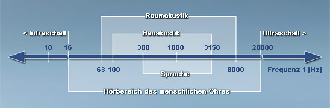

Die Elefanten kommunizieren, ähnlich wie wir Menschen, mit Lauten. Elefanten benutzen dazu Töne von gerade einmal 20 Hertz, die vom menschlichen Ohr kaum wahrnehmbar sind, da der Mensch nur Töne zwischen 16 und 20.000 Hertz wahrnehmen kann. Töne mit einer Frequenz unter 16 Hz sind im Bereich des Infraschalls:
